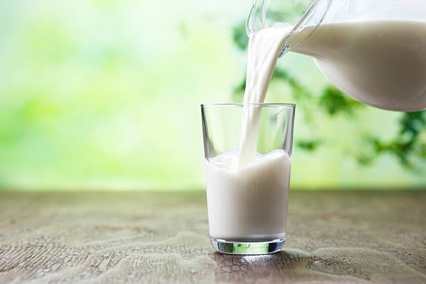

Toast

Milk time
Milk is the life blood of any child growing up, teenagers that just want something different, and adults, who are mixing it with alcohol. In this recipe I will instruct you on how to make a glass of milk.
Ingredients
- 1 gallon (or half gallon or pint) of Milk
- 1 drinking cup
- Towel for messes
Steps
- Prepare your cup to drink out of
- Remove jug of milk from its cage
- unscrew the lid of the milk
- With extreme precision, pour the milk into the glass
- With the towel clean up any spilt milk so you don't have to cry about it
- enjoy